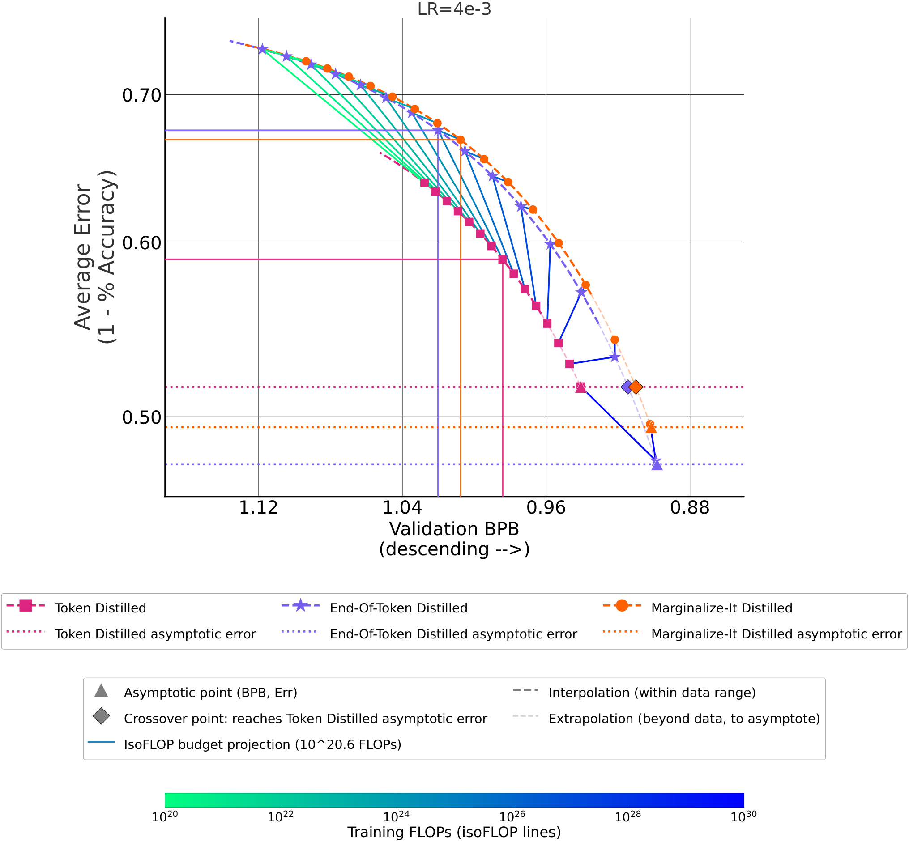
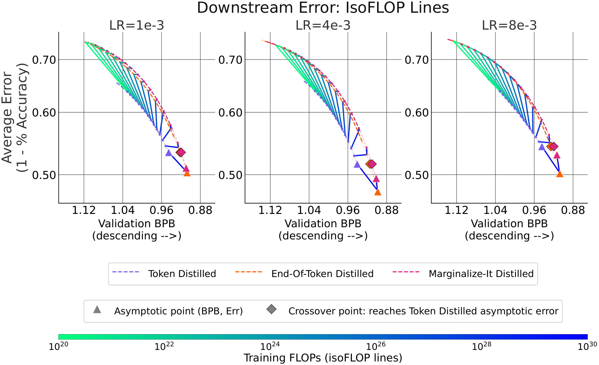

Breaking the Token Ceiling: Distilling Smaller, Stronger Byte Models
Paper: arXiv 2609.12303, "Breaking the Token Ceiling: Distilling Smaller, Stronger Byte Models", by Kalyani Marathe, Artidoro Pagnoni, Tomasz Limisiewicz, Margaret Li, Mike Lewis, Luke Zettlemoyer, Srinivasan Iyer (the announcing thread attributes it to Meta). Grounded in the arXiv HTML full text; figures downloaded from the arXiv HTML version.
TL;DR
- To distill a byte-level student from a token-level teacher (Llama 3-8B), the teacher's token logits must become byte logits. The paper introduces two converters: Marginalize-It (approximate — renormalizes over vocabulary tokens whose prefixes match the bytes seen so far) and End-Of-Token (exact — adds an
<eot>symbol that absorbs the probability mass of continuations, at ~30.94% extra compute per unit of data). - In the first FLOP-controlled overtraining study on this axis — six settings crossing {Tokens, Bytes, Bytes w/
<eot>} × {cross-entropy, distillation}, layer-parameter-matched ~1B models, up to 1T bytes — token models win at low compute but plateau; byte models start worse and pass them, reaching a higher downstream ceiling (asymptotic avg accuracy: End-Of-Token Distilled 52.4% vs Token Distilled 48.4% — the "up to 4%" headline). - Byte distillation is also logistically cheaper: the 256-entry vocabulary means no top-k truncation when dumping teacher logits and roughly one-fifth the logit storage, and End-Of-Token Distilled matches distilled-token performance with one-sixth of the training data.
Why this matters
Distillation practice quietly assumes teacher and student share a tokenizer — that's what makes logit matching well-defined. That assumption pins the student to the teacher's vocabulary, with all the known tokenizer taxes: noise sensitivity, weak character-level understanding, multilingual unfairness, fragility on code and numbers. Byte-level modeling (the BLT line of work) removes the tokenizer but has mostly been studied for pretraining from scratch. This paper connects the two: it makes the standard distillation pipeline tokenizer-crossing, so a small byte model can inherit a large token teacher's distribution. For this tracker's interests the deeper result is the scaling-law shape: the choice of output granularity sets the ceiling of what distillation can transfer, not just the rate — "which vocabulary" turns out to be a first-class distillation design axis, alongside on-policy vs off-policy and logit vs sample matching.

Figure 1 from the paper: downstream performance scaling laws (lr = 4e-3) averaged across six benchmarks. Token-1B leads in the low-FLOP regime and plateaus; Bytes-1B and End-Of-Token-1B start worse but cross over and reach a higher asymptote.The core idea
The teacher emits a next-token distribution over a ~128K BPE vocabulary; the student needs a next-byte distribution over 256 (+ special) symbols. Since every BPE token decodes to a byte string, a byte-level distribution can be derived by marginalizing token probabilities over byte prefixes:
- Marginalize-It (approximate). The first byte's distribution is exact: sum the probability of every vocabulary token starting with each candidate byte. For each subsequent byte, restrict to vocabulary tokens whose decoded prefix matches the ground-truth bytes so far and renormalize. The flaw: tokens that end inside the prefix get silently dropped. In the paper's worked example (prompt "Tiramisu", predicting byte 3 after teacher probabilities \(p(\texttt{isu})=0.5\), \(p(\texttt{isk})=0.125\), \(p(\texttt{is})=0.125\)), the continuation mass of
isdisappears and gets redistributed:
Fixing this exactly would need an extra teacher forward pass per early-terminating token — intractable at corpus scale.
- End-Of-Token (exact). Append an
<eot>marker after every BPE token in the training byte stream and expand the byte vocabulary by one (to 261). The residual mass of "the token ends here" is then a predictable symbol rather than lost probability. Same example, now with all tokens sharing prefixisin play (total mass \(0.5+0.125+0.125=0.75\)):
This is exact, needs no extra teacher inference — and the <eot> insertions (one per ~4.5 bytes) mean the student spends ~30.94% more compute per unit of data, which the paper finds further improves the asymptotic ceiling.
How it works
Controlled comparison. Three layer-parameter-matched architectures (all 1.28B layer parameters, Llama-3 design): Token-1B (1.81B total, 128,256-entry vocab), Bytes-1B (260-entry vocab), End-Of-Token-1B (261). Each is trained under cross-entropy and under distillation from Llama 3-8B → six experiments, swept over learning rates {1e-3, 4e-3, 8e-3} and data scales up to 1T bytes of the Llama-2 training mixture, evaluated on eight benchmarks across Multiple Choice QA, Language Generation, and Machine Translation.
Scaling-law machinery. Validation bits-per-byte follows a saturating power law in training FLOPs \(x\),
where \(c\) is the asymptotic BPB (e.g. Token Supervised: \(y = 1.075\times10^{9}\,x^{-0.500} + 0.9568\); End-Of-Token Distilled: \(y = 2.734\times10^{7}\,x^{-0.405} + 0.8983\)). Downstream top-1 error is then fit as a function of BPB \(y\),
with \(\epsilon, k, \gamma\) fit per setting. Chaining the two gives predicted accuracy at any compute budget; "feather plots" connect iso-FLOP points across methods to visualize when the byte curves cross the token curve.
Algorithm: End-Of-Token byte distillation (condensed from Sections 2-3)
# One-time teacher logit dump
for each document in corpus:
tokens ← BPE_tokenize(document) # teacher's tokenizer (Llama 3-8B)
logits ← teacher_forward(tokens) # one pass, full 128K vocab
for each position t:
for each byte position j inside token t+1:
V_j ← {v ∈ vocab : decode(v) matches ground-truth bytes < j}
byte_logits[j][b] ← Σ p(v) for v ∈ V_j with j-th byte b
byte_logits[j][<eot>] ← Σ p(v) for v ∈ V_j that end before j
store byte_logits # 261 entries; no top-k needed
# Student training
byte_stream ← bytes(document) with <eot> after every BPE token
minimize KL( byte_logits || student(byte_stream) ) # distillation loss
(Pseudocode reconstructed from the method description; the paper's exact pseudocode is in its Appendix F.1.)
Results
- Crossover, then a higher ceiling. Across benchmarks, Token-1B wins the low-FLOP regime and plateaus; byte models overtake with compute. Predicted asymptotic average accuracies: Token Supervised 46.0%, Token Distilled 48.4%, Marginalize-It Distilled 50.5%, Bytes Supervised 51.2%, Bytes w/
<eot>Supervised 51.6%, End-Of-Token Distilled 52.4% — exact conversion beats approximate (Marginalize-It distillation actually lands at-or-below its own supervised baseline, which the paper attributes to the approximation), and distillation only helps bytes when it preserves the teacher distribution exactly. - Data and storage efficiency. End-Of-Token Distilled matches distilled Token-1B using 1/6 of the training data; the 256-ish vocabulary avoids top-k truncation during logit dumping and cuts teacher-logit storage to about one-fifth.
- Against real small models, the fitted laws predict distilled End-Of-Token-1B asymptotically surpasses Llama 3.2-1B by up to 6.5%, Gemma-3-1B-pt by 8.1%, and Gemma 2B by 2.1% on averaged downstream tasks.
- A methodological caveat the authors flag themselves: BPB is not comparable across tokenization schemes and objectives — byte models beat Token Supervised on BPB while losing on benchmarks in some regimes, so downstream calibration (their equation 2) is a required final step, not an optional nicety.

Figure 3 from the paper: validation-BPB scaling curves across data scales (lr = 4e-3), the raw material for the fitted power laws and crossover analysis.How it connects
- The on-policy distillation survey and Direct-OPD live on the objective axis (whose samples, whose feedback); this paper shows the representation axis has comparable leverage — and it's fully offline, one teacher pass per corpus, so it composes with any OPD-style post-training afterwards.
- Privileged information in self-distillation and the new "Privileged Solutions or Context-Induced Teacher Behavior?" entry (this list) both interrogate what signal the teacher actually transmits; the Marginalize-It vs End-Of-Token gap is the same question at the logit level — an approximate teacher distribution measurably lowers the student's ceiling.
- The byte-level architecture entries in this tracker (the BLT-derived work in the feed, tokenizer-free scaling threads) supply the why bytes motivation; this paper supplies the migration path: you don't have to pretrain byte models from scratch if you can distill across the tokenizer boundary.
- Switch distillation studies changing teachers mid-training; changing vocabularies between teacher and student is arguably the more extreme version of the same mismatch problem, solved here by exact marginalization rather than curriculum.
Critical take
The headline numbers are extrapolations: 4%, 6.5%, and the crossover points all come from chained scaling-law fits (\(y=bx^a+c\) into \(z(y)=\epsilon-ke^{-\gamma y}\)), and the interesting regime — past the crossover — is exactly where the fits are least constrained by data. The study is also 1B-scale, dense, single-teacher (Llama 3-8B), and layer-parameter-matched rather than inference-cost-matched: byte sequences are ~4.5× longer than token sequences, so serving cost per generated character is higher for the byte student, and the paper's FLOPs-per-unit accounting covers training, not deployment latency (inferred from the setup description — verify in the paper's efficiency appendix). The <eot> finding is the most intriguing loose thread: 31% more compute on the same data improving the asymptote suggests part of the "byte ceiling" story is really a compute-per-byte story, and the paper itself notes the supervised <eot> variant already beats plain bytes. Still, the engineering wins are unconditional: exact conversion with no extra teacher passes, no top-k truncation, 5× cheaper logit storage — if you're distilling small models at all, the byte option just became practical to try.
If you remember three things
- Tokenizer-crossing distillation is now a solved plumbing problem: End-Of-Token conversion turns token logits into exact byte logits with one teacher pass, a 261-entry vocab, no top-k, and ~5× less logit storage.
- Granularity sets the ceiling: token students learn faster but plateau lower; byte students cross over and asymptotically win (52.4% vs 48.4% predicted average), and only exact teacher distributions realize the gain — Marginalize-It's dropped continuation mass costs real accuracy.
- Don't compare BPB across tokenization schemes — byte models can win BPB and lose benchmarks; always calibrate through a downstream-error mapping before declaring a better model.